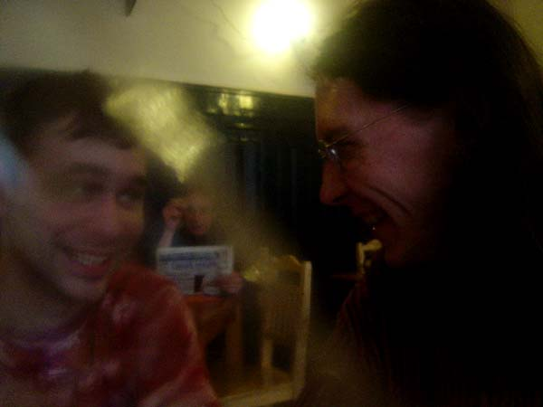
15. 3. 2005 (fotografoval nìgdo z grupy)
Mezi zkouškami Návratu z proutí se šlo k Antoníèkovi. Vo�rali jsme se všichni.
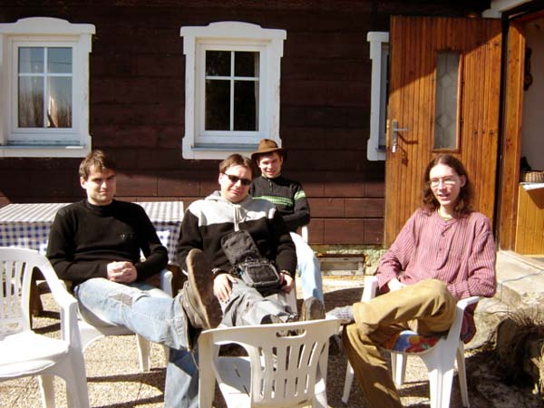
2. 4. 2005 (fotografovala Anièka Šišková)
Pánská seda u Anièky Šiškové na chatì. Ráno. Kocovina.
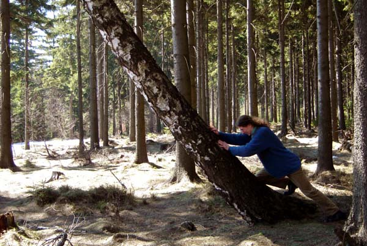
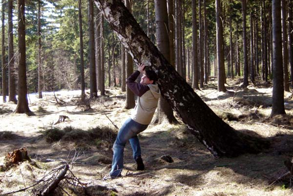
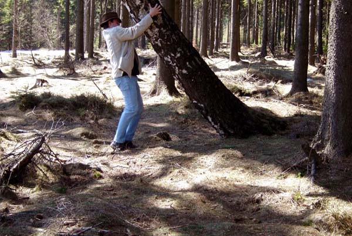
2. 4. 2005 (fotografovala Anièka Šišková)
Kdy� se kácí les, létají krvik totry.
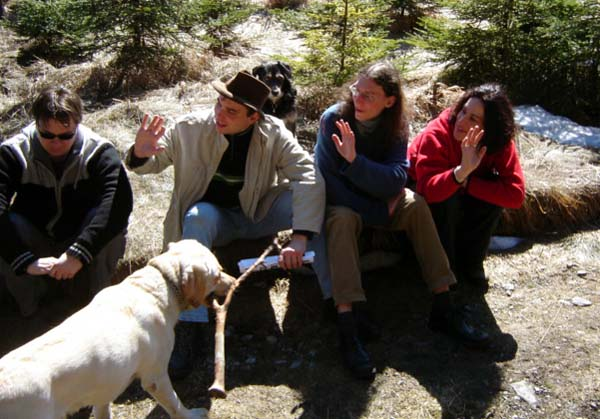
2. 4. 2005 (fotografoval Filip Votava)
Hošna, kterı je alergickı na Fíka, Fík, kterı má rád Hošnu - a pøející pøátelé.
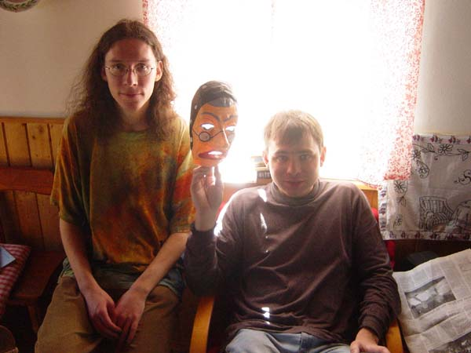
3. 4. 2005 (fotografoval nìgdo)
Na chatì Anièky Šiškové jsme nalezli masku našeho Newtona, kterou sem Tomáš odnesl pøed 6 lety po vystoupení v OKDN.
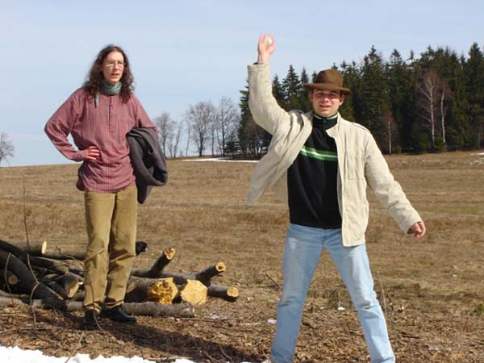
3. 4. 2005 (fotografovala Anièka Šišková)
...a �e bylo tak hezky teplo, zkoulovali jsme se...
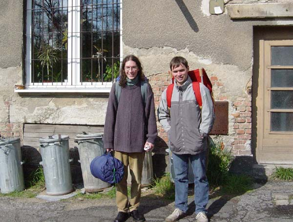
6. 5. 2005 (fotografovala Anièka Kuèerková)
Krvik Totr pøed èin�ákem v Aši. Smysl nehledej. Chtìli jsme se vyfotit pøed èin�ákem v Aši.
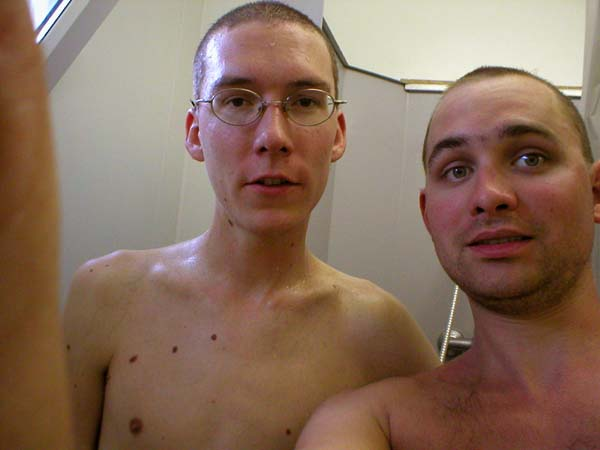
4. 7. 2005 (fotografovala Petra Biòovcová)
6mm argument na Brod for People.
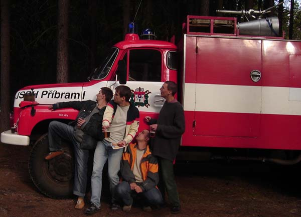
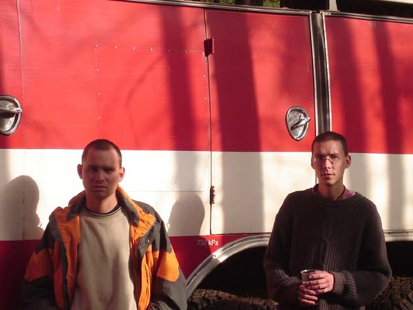
23. 7. 2005 (fotografovali Sonia Cieœlar (1) a Bogdan Cieœlar (2))
Pøíbramští hasièi pracují tradiènì s tatrovkami. Momentka pøed vystoupením v lesním amfiteátru.
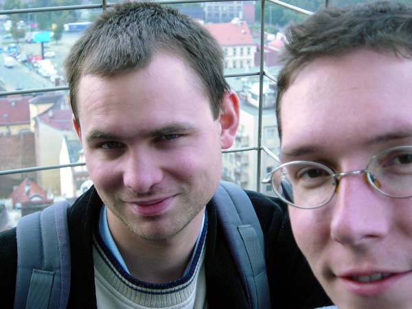
5. 10. 2005 (fotografovala samospouš� Krvik Totr)
Na nejvyšší kostelní vì�i ve støední Evropì a v Plzni.
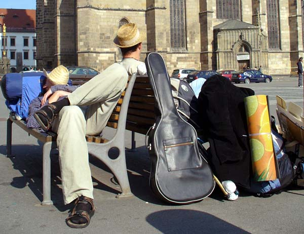
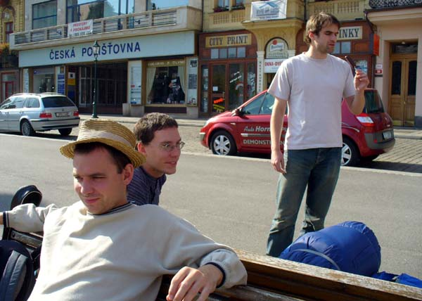
9. 10. 2005 (fotografovala Petra Biòovcová)
Siesta na plzeòském námìstí pøed odjezdem domù.
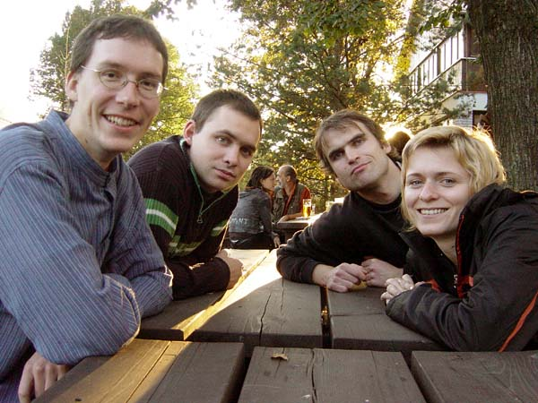
22. 10. 2005 (fotografovala samospouš� Krvik Totr)
Po vystoupení v Pyšelích pøed nádra�ní restauraci Pyšelka na nádra�í Pyšely.
© 2005 Krvik Totr Limity.